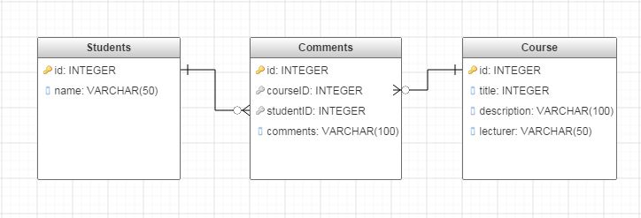

02. Обектно ориентирано PHP и работа с MySQL
ООП в PHP
- PHP има пълна поддръжка на ООП
- Класове, обекти, интерфейси, абстрактни класове, traits
- Наследяване
- Енкапсулация
- Полиморфизъм
- Dynamic dispatch в последните версии
ООП в PHP
<?php
class SimpleClass {
// property declaration
public $var = 'a default value';
// method declaration
public function displayVar() {
echo $this->var;
}
}
?>
ООП в PHP
<?php
$instance = new SimpleClass();
var_dump($instance->var);
$instance->displayVar();
?>
ООП в PHP
<?php
class Person {
private $name;
public function setName($name) {
$this->name = $name;
}
public function getName() {
return $this->name;
}
}
$joe = new Person();
$joe->setName('Joe');
?>
ООП в PHP
Дефинирането на клас започва с думата class. След нея се поставя името на класа, следвано от двойка къдрави скоби, които указват тялото на класа. В него може да дефинираме методи и свойства, принадлежащи на класа.
<?php
class Person {
//properties
//methods
}
?>
Енкапсулация
- public - може да се достъпва/модифицира навсякъде
- private - може да се достъпва/модифицира само от самия клас
- protected - може да се достъпва/модифицира от класа или от наследниците му
Енкапсулация
<?php
class MyClass {
public $public = 'Public';
protected $protected = 'Protected';
private $private = 'Private';
function printHello() {
echo $this->public;
echo $this->protected;
echo $this->private;
}
}
?>
Енкапсулация
<?php
$obj = new MyClass();
echo $obj->public; // Works
echo $obj->protected; // Fatal Error
echo $obj->private; // Fatal Error
$obj->printHello(); // Shows Public, Protected and Private
?>
Енкапсулация
<?php
class MyClass {
public $public = 'Public';
protected $protected = 'Protected';
private $private = 'Private';
}
class MyClass2 extends MyClass {
protected $protected = 'Protected2';
function printHello() {
echo $this->public;
echo $this->protected;
echo $this->private;
}
}
?>
Енкапсулация
<?php
$obj2 = new MyClass2();
echo $obj2->public; // Works
echo $obj2->private; // Undefined
echo $obj2->protected; // Fatal Error
$obj2->printHello(); // Shows Public, Protected2, Undefined
?>
Енкапсулация
<?php
class MyClass {
// Declare a public constructor
public function __construct() { }
// Declare a public method
public function MyPublic() { }
// Declare a protected method
protected function MyProtected() { }
// Declare a private method
private function MyPrivate() { }
}
?>
Енкапсулация
<?php
class MyClass2 extends MyClass {
// This is public
function Foo2() {
$this->MyPublic();
$this->MyProtected();
$this->MyPrivate(); // Fatal Error
}
}
?>
Енкапсулация
<?php
$myclass2 = new MyClass2();
$myclass2->MyPublic(); // Works
$myclass2->Foo2(); // Public and Protected work, not Private
?>
Наследяване
Наследяването на клас се задава с ключовата дума extends.
Няма множествено наследяване.
Наследяване
<?php
class ExtendClass extends SimpleClass
{
// Redefine the parent method
function displayVar() {
echo "Extending class\n";
parent::displayVar();
}
}
$extended = new ExtendClass();
$extended->displayVar();
?>
Наследяване
<?php
class Foo {
public function printItem($string) {
echo 'Foo: ' . $string . PHP_EOL;
}
public function printPHP() {
echo 'PHP is great.' . PHP_EOL;
}
}
class Bar extends Foo {
public function printItem($string) {
echo 'Bar: ' . $string . PHP_EOL;
}
}
?>
Наследяване
<?php
$foo = new Foo();
$bar = new Bar();
$foo->printItem('baz'); // Output: 'Foo: baz'
$foo->printPHP(); // Output: 'PHP is great'
$bar->printItem('baz'); // Output: 'Bar: baz'
$bar->printPHP(); // Output: 'PHP is great'
?>
Конструктори
<?php
class BaseClass {
function __construct() {
print "In BaseClass constructor\n";
}
}
class SubClass extends BaseClass {
function __construct() {
parent::__construct();
print "In SubClass constructor\n";
}
}
$obj = new BaseClass();
$obj = new SubClass();
?>
Конструктори
<?php
class Person {
private $first_name;
private $last_name;
function __construct($first_name, $last_name) {
$this->first_name = $first_name;
$this->last_name = $last_name;
}
public function getFullName() {
return $this->first_name.' '.$this->last_name;
}
}
$person = new Person('Ivan', 'Ivanov');
echo $person->getFullName();
?>
Деструктури
<?php
class MyDestructableClass {
function __construct() {
print "In constructor\n";
$this->name = "MyDestructableClass";
}
function __destruct() {
print "Destroying " . $this->name . "\n";
}
}
$obj = new MyDestructableClass();
?>
Абстрактни класове
<?php
abstract class AbstractClass {
// Force Extending class to define this method
abstract protected function getValue();
abstract protected function prefixValue($prefix);
// Common method
public function printOut() {
print $this->getValue() . "\n";
}
}
?>
Абстрактни класове
<?php
class ConcreteClass extends AbstractClass {
protected function getValue() {
return "ConcreteClass";
}
public function prefixValue($prefix) {
return "{$prefix}ConcreteClass";
}
}
?>
Абстрактни класове
<?php
$class1 = new ConcreteClass();
$class1->printOut();
echo $class1->prefixValue('FOO_') ."\n";
?>
Final
<?php
class BaseClass {
final public function moreTesting() {
echo "BaseClass::moreTesting() called\n";
}
}
class ChildClass extends BaseClass {
public function moreTesting() {
echo "ChildClass::moreTesting() called\n";
}
}
// Fatal error: Cannot override final method BaseClass::moreTesting()
?>
Релацонна база от данни

SQL
Език за работа с данни.
Той позволява:
- Вмъкване на данни(Insert)
- Извличане на данни(Select)
- Редактиране на данни(Update)
- Изтриване на данни(Delete)
- Създавне на таблици, вюта, бази и други (Create)
Извличане на данни(Select)
SELECT * FROM MAJORS
SELECT NAME, ACADEMIC_DEGREE FROM MAJORS
SELECT * FROM MAJORS WHERE NAME = 'Software Engineering'
SELECT * FROM MAJORS WHERE START_YEAR = 2011
Вмъкване на данни(Insert)
INSERT INTO MAJORS (NAME, ACADEMIC_DEGREE) VALUES ('Software Eginnering', 'bachelor')
JOIN заявки
SELECT Orders.OrderID, Customers.CustomerName, Orders.OrderDate
FROM Orders
INNER JOIN Customers
ON Orders.CustomerID=Customers.CustomerID;
Типове SQL JOIN:
- INNER JOIN: Връща всички редове за които има поне едно съвпадение и в двете таблици.
- LEFT JOIN: Връща всички редове от лявата таблица и съвпадащите редове в дясната.
- RIGHT JOIN: Връща всички редове от дясната таблица и съвпадатещите редове в лявата.
- FULL JOIN: Връща всички редове когато има съвпадение в една от таблиците.
MySQL
[от Уикипедия, свободната енциклопедия] MySQL SQL система за управление на бази данни (СУБД) с повече от шест милиона инсталации.
Изпълняване на SQL заявки през phpMyAdmin

PDO
В PHP има разширения(Extensions), които надграждат основната функционалност на езика. PHP Data Objects (PDO) е едно такова разширение.
Дефинира лек, консистентен интерфейс за работа с различни СУБД.
Предоставя абстрактен слой за работа с данни.
СУБД която използвате е без значение, защото интерфейса е еднакъв - MS SQL Server, DB2, MySQL, Oracle, PostgreSQL, SQLite....
PDO Свързване към база
<?php
$user = 'username';
$pass = 'password';
$dbh = new PDO('mysql:host=localhost;dbname=test', $user, $pass);
// use the connection here
// and now we're done; close it
$dbh = null;
?>
PDO Извличане на данни
<?php
$host = "localhost";
$db = "my_db";
$user = "root";
$pass = ""
$conn = new PDO("mysql:host=$host;dbname=$db",$user,$pass);
$sql = "SELECT * FROM MAJORS";
$query = $conn->query($sql) or die("failed!");
while ($row = $query->fetch(PDO::FETCH_ASSOC)) {
echo $row['NAME'];
}
PDO Извличане на данни
<?php
....
echo '<ul>';
while($row = $q->fetch(PDO::FETCH_ASSOC)){
echo '<li>'.$row['NAME'].'</li>';
}
echo '</ul>';
Prepared statements
Заявка, записан в базата от данни и която може да се изпълнява многократно с подаване на различни данни.
Prepared statements
Етапи:
- Заявката се съставя от приложението и се изпраща на базата от данни.
- Базата от данни парсва, компилира, оптимизира заявката и я запазва.
- В следващ момент, приложението подава данни към тази заявка и тя се изпълнява, като това се повтаря многократно.
Защо да ги ползваме?
- Повишава се бързодействието.
- Повишава се сигурността.
Prepared statements
<?php
$stmt = $conn->prepare("
INSERT INTO MAJORS (NAME, ACADEMIC_DEGREE)
VALUES (:name, :academic_degree)");
$stmt->bindParam(':name', $name);
$stmt->bindParam(':academic_degree', $academic_degree);
$name = 'Biology';
$academic_degree = 'bachelor';
$stmt->execute();
$name = 'Management';
$academic_degree = 'master';
$stmt->execute();
?>
Prepared statements
<?php
echo '<ul>';
$stmt = $conn->prepare("SELECT * FROM MAJORS where ACADEMIC_DEGREE = ?");
if ($stmt->execute(array('bachelor'))) {
while ($row = $stmt->fetch()) {
echo '<li>'.$row["NAME"].'</li>';
}
}
echo '</ul>';
?>
Транзакции
<?php
$conn->beginTransaction();
$sql = 'INSERT INTO fruit (name, calories) VALUES (?, ?)';
$sth = $conn->prepare($sql);
foreach ($fruits as $fruit) {
$sth->execute(array(
$fruit->name,
$fruit->calories,
));
}
$dbh->commit();
?>
Транзакции
<?php
$conn->beginTransaction();
$sth = $conn->exec("DROP TABLE MAJORS");
$conn->rollBack();
?>
Задача 1
Създайте следните таблици: Student, Course, Comments:
Students
- id (Primary key, Auto-generated integer)
- name(varchar)
Course
- id (Primary key, Auto-generated integer)
- title(varchar)
- description(varchar)
- lecturer(varchar)
Comments
- id (Primary key, Auto-generated integer)
- courseID(integer)
- studentID(integer
- comments(varchar)
продължение
Students
- Добавете 2-ма студенти
- Напишете заявка, който връща броя на записите в таблица "Students"
Courses
- Добавете курс ("www-tech", "Introduction to the web technologies", "Petrov")
- Добавете курс ("artificial intelligence", "Intro to AI", "Koichev")
- Добавете курс ("Network programming in java", "Intro to network programming", "Petrov")
- Напишете заявка, която да връща имената на преподавателите без повторения
Задача 2
- Използвайки таблиците от Задача 1, напишете заявка, която да връща имената(title) на всички курсове, за които има писани коментари подредени по азбучен ред 
Задача 3
Създайте клас User със:
- $id
- $username
- $password
Свойства:
Методи: li __constuct($id, $username, $password) li set/get методи за всяко свойство li getUser(), който да връща низ с член променливите на класа разделени със запетая "$id,$username,$password"
продължение
Създайте клас Student, който наследява User със:
- $name
- $course
Свойства:
Методи: li __constuct($id, $username, $password, $name, $course) li set/get методи за всяко свойство li getUser(), който да връща низ с член-променливите на класа, разделени със запетая "$id,$username,$password,$name,$course"
Клас Admin, който наследява User
Методи:
- __constuct($id, $username)
- getUser(), който да връща следния низ: "admin"